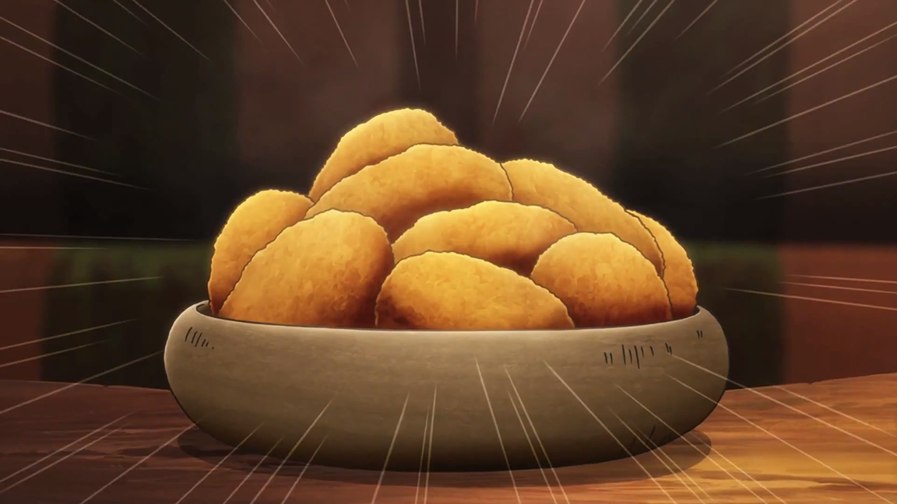

Smashed Roasties

Description
Transform your kitchen into a fun culinary adventure for the whole family with this delightful Japanese dish! Let your little chefs take charge as they master the art of cooking sticky rice and embark on a hands-on journey of rolling and assembling sushi pieces with their favorite ingredients. It's not just a meal; it's a creative and tasty experience that brings everyone together in the joy of making and savoring delicious homemade sushi!
Ingredients
- 1 ½kg floury potatoes (Maris Piper or King Edward), smaller potatoes kept whole, larger ones chopped in half
- 100ml sunflower oil
- Smashed roasted new potatoes (as an alternative)
Instructions
-
Heat oven to 200C/180Cfan/gas 6. Put the potatoes in a large pan filled with cold salted water. Bring to the boil and cook for 15 mins until a cutlery knife can be inserted into the centre of a potato with only a little resistance, then drain and steam-dry.
-
Arrange the potatoes in a large roasting tin, leaving enough space between each one so that they have room to spread once smashed. Using a fish slice, push down on each of the potatoes to break them up slightly. Don’t worry if some break up completely, it just means more crispy bits. Season well and drizzle over the oil. Roast for 1 hr, turning once, until golden and crispy.